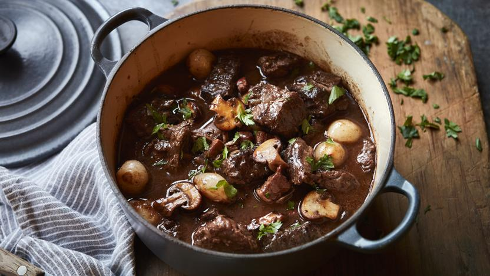

BOEUF BOURGUIGON

Boeuf Bourguignon is a classic French stew made with beef slowly braised in
red wine along with vegetables, herbs, and bacon. The long cooking process
creates a rich, flavorful sauce and tender meat that melts in your mouth.
Ingredients:
- 2 lbs (900 g) beef chuck, cut into cubes
- 4 slices bacon, chopped
- 2 carrots, sliced
- 1 onion, diced
- 2 cloves garlic, minced
- 2 cups red wine
- 2 cups beef broth
- 2 tbsp tomato paste
- 1 tbsp flour
- 1 tsp thyme
- 2 bay leaves
- Salt and black pepper to taste
- 8 oz (225 g) mushrooms, sliced
Steps to follow:
- Cook the bacon in a large pot until crisp. Remove and set aside.
- Brown the beef cubes in the bacon fat.
- Add the onion, carrots, and garlic. Cook until softened.
- Stir in the flour and tomato paste.
- Pour in the red wine and beef broth, stirring well.
- Add the thyme, bay leaves, bacon, salt, and pepper.
- Cover and simmer on low heat for 2 to 3 hours until the beef is tender.
- Add the mushrooms during the last 30 minutes of cooking.
- Remove the bay leaves and serve hot.